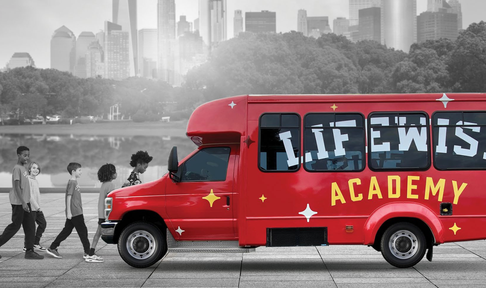
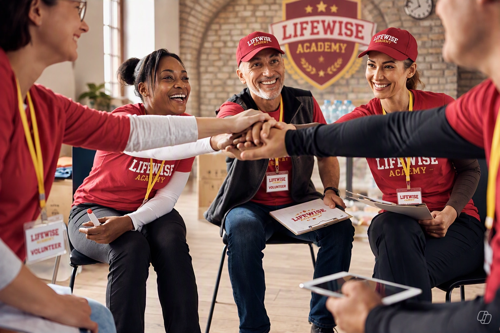

Spread the word
LifeWise Street Teams help share the program and grow a local Community Interest List.
Explore Street Team optionsLifeWise Academy offers Bible-based character education during public-school hours. Help make local access possible for families in Lee and Collier counties.
LifeWise partners with parents so families can enroll their child in Bible class during the school day.
Bible class takes place during the school day through released-time religious instruction.
Lessons connect timeless truths with the choices students make every day.
Courage, kindness, and respect are part of the conversation.

A school-day opportunityEvery community has its own path. A gift through LifeWise can support a local program when one is available to select in the official giving flow.
Not sure whether Lee or Collier is listed? Contact LifeWise to ask about local availability and gift designation before giving.
Ask LifeWise about local givingShare the idea, help a community explore a launch, or connect your church with LifeWise.
These are LifeWise’s general pathways, not confirmation of an active program or volunteer opening in Lee or Collier County. Contact LifeWise to ask what’s available locally.
Ask LifeWise about local volunteer optionsCharacter worth carrying

Explore the available local programs on the official giving page. Your gift is processed by LifeWise Academy, not by this campaign page.
Each link sends your requested amount to LifeWise’s official checkout in a new tab. Review the amount, gift frequency, and program before donating; the checkout may ask you to enter or select them again. The $500+ option sends $500.
If Lee or Collier County is not available in the program list, contact LifeWise to confirm local availability or how a gift may be designated.
No. Giving happens on LifeWise Academy's official checkout. This page only helps connect local supporters to that process.
Use the official local-program giving checkout to see the available programs. If you do not see the county or program you have in mind, contact LifeWise before giving to ask about availability and designation.
Explore LifeWise’s Street Team, community launch, and church liaison resources above. Contact LifeWise to confirm which opportunities are currently available in Lee or Collier County.
LifeWise partners with parents to offer Bible-based character education to public-school students during school hours through released-time religious instruction.